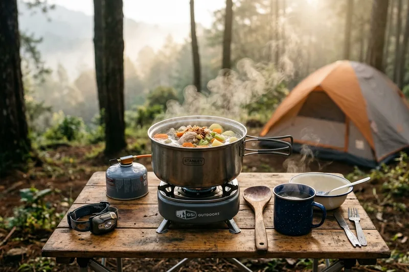

Resep masak praktis camping dengan alat minimal berfokus pada hidangan satu panci seperti sop, nasi liwet, dan mi kuah yang cepat matang serta mudah dibersihkan.
Ringkasan Inti
- Satu kompor portabel dan satu atau dua panci sudah cukup untuk banyak menu.
- Hidangan satu panci menghemat air, bahan bakar, dan waktu mencuci.
- Masak ayam, telur, dan ikan hingga matang seluruhnya.
- Jangan memasak di dalam tenda, dan gunakan pelindung angin saat berangin.
- Racik dan potong bahan di rumah agar memasak di lokasi lebih cepat.
Apa Saja Peralatan Minimal untuk Memasak Saat Camping?
Peralatan minimal meliputi kompor portabel dan gas, satu atau dua panci, wajan kecil, pisau, talenan lipat, sendok sayur, korek api, serta wadah dan sabun cuci.
Tambahkan sendok, garpu, dan piring atau mangkuk sesuai jumlah peserta. Alat tambahan yang berguna adalah penjepit makanan, pembuka kaleng, termos air panas, dan kain lap bersih. Bawa juga kantong sampah dan wadah tertutup untuk sisa makanan. Pilih alat yang multifungsi, misalnya panci bertutup yang juga dapat dipakai sebagai wajan.
Bagaimana Cara Membuat Sop Ayam Sayur Satu Panci?
Sop ayam sayur satu panci dibuat dengan merebus ayam berbumbu hingga matang, lalu menambahkan wortel, kentang, dan kubis sampai empuk.
Bahan untuk sekitar empat porsi:
- 500 gram ayam, dipotong kecil
- 2 buah wortel, dipotong
- 2 buah kentang sedang, dipotong dadu
- Kubis atau sawi secukupnya
- 3 siung bawang putih dan 3 siung bawang merah, dihaluskan
- Garam, merica, dan daun bawang
- Sekitar 1,2 liter air
Langkah memasak:
- Tumis bumbu halus di dasar panci hingga harum.
- Masukkan ayam, aduk hingga berubah warna.
- Tuang air dan didihkan dengan api sedang.
- Masukkan kentang dan wortel, masak hingga hampir empuk.
- Tambahkan kubis, garam, dan merica, lalu masak sebentar.
- Taburkan daun bawang dan sajikan hangat.
Pastikan potongan ayam matang seluruhnya sebelum disajikan.
Bagaimana Cara Memasak Nasi Liwet Sederhana di Panci?
Nasi liwet sederhana dimasak dengan menumis bumbu, memasukkan beras dan air, lalu menanak dengan api kecil dalam panci tertutup hingga air terserap dan nasi matang.
Bahan untuk sekitar empat porsi: 3 cangkir beras yang sudah dicuci, air dengan perbandingan sedikit lebih banyak dari beras, 3 siung bawang putih, 3 siung bawang merah, 1 batang serai yang dimemarkan, 2 lembar daun salam, dan garam secukupnya.
Langkah memasak:
- Tumis bawang merah dan bawang putih hingga harum.
- Masukkan beras dan aduk sebentar.
- Tuang air, masukkan serai, daun salam, dan garam.
- Didihkan, lalu kecilkan api dan tutup panci.
- Tanak hingga air terserap, kemudian matikan api dan biarkan tertutup beberapa menit.
Tambahkan lauk seperti telur rebus, ikan asin, atau ayam suwir di atas nasi saat dikukus terakhir. Nasi liwet cocok untuk rombongan karena satu panci dapat melayani banyak orang.
Bagaimana Membuat Mi Kuah Telur Sayur yang Hangat?
Mi kuah telur sayur dibuat dengan merebus air, memasak mi dan sayur sebentar, memasukkan telur, lalu menambahkan bumbu agar kuah hangat dan mengenyangkan.
Bahan untuk dua porsi: 2 bungkus mi instan, 2 butir telur, segenggam sawi atau kubis, irisan bawang daun, dan bumbu mi. Rebus sekitar 500 sampai 600 mililiter air, masukkan mi dan sayur, lalu masak sesuai petunjuk kemasan. Pecahkan telur ke dalam kuah dan aduk perlahan hingga matang. Masukkan bumbu, aduk, dan taburi bawang daun.
Untuk variasi, tambahkan sosis, bakso, atau irisan cabai. Menu ini cocok untuk sarapan karena cepat dan hemat bahan bakar.
Bagaimana Membuat Camilan Bakar Seperti Pisang dan Jagung?
Pisang dan jagung dapat dibakar dengan api sedang sambil sesekali dibalik, lalu diberi cokelat, keju, mentega, atau bumbu manis pedas sesuai selera.
Untuk pisang bakar, belah kulit pisang secara memanjang tanpa memotong dasarnya, isi dengan cokelat dan keju, lalu bungkus longgar dengan alumunium foil. Bakar di atas bara atau di atas panci dengan api kecil selama beberapa menit hingga lembut.
Untuk jagung bakar, kupas sebagian kulit dan bersihkan rambutnya. Olesi mentega dan bumbu, lalu bakar sambil dibalik hingga matang merata. Pastikan area bakar diizinkan oleh pengelola lokasi dan jauh dari tenda serta tanaman kering.
Bagaimana Memastikan Makanan Matang dan Aman?
Pastikan ayam, telur, dan ikan dimasak hingga matang seluruhnya, tidak ada bagian merah muda pada daging ayam, dan sisa makanan segera disimpan tertutup atau dibuang.
WHO (World Health Organization) menyebut penyakit diare sebagai penyakit bawaan makanan yang paling umum, dengan sekitar 550 juta orang sakit dan 230.000 kematian setiap tahun. Banyak kasus berkaitan dengan makanan yang kurang matang atau tercemar bakteri, sehingga proses memasak yang tuntas sangat penting.
Beberapa kebiasaan yang membantu:
- Cuci tangan dengan sabun sebelum memasak dan setelah menyentuh bahan mentah.
- Gunakan talenan dan pisau terpisah untuk bahan mentah dan matang.
- Masak ayam hingga cairannya jernih dan tidak ada bagian merah muda.
- Segera dinginkan sisa makanan atau buang bila sudah lama di suhu ruang.
- Gunakan air minum kemasan atau air yang sudah direbus.
Artikel ini berisi informasi umum. Bila muncul muntah, diare berat, atau demam setelah makan, segera hubungi tenaga kesehatan. Informasi lebih lengkap tersedia di panduan keamanan pangan WHO.
Bagaimana Memasak di Udara Dingin dan Berangin?
Saat memasak di udara dingin dan berangin, gunakan pelindung angin, panci bertutup, dan api sedang agar panas tidak terbuang dan gas tidak cepat habis.
Letakkan kompor di tempat yang terlindung dari angin dengan permukaan datar dan stabil. Pelindung angin dapat dibuat dari lembaran aluminium atau memakai tubuh dan perlengkapan lain di sekitar. Tutup panci selama memasak untuk mempercepat panas dan menghemat gas.
Aspek keselamatan sangat penting: jangan pernah memasak atau menyalakan kompor dan arang di dalam tenda, karena risiko kebakaran dan keracunan gas karbon monoksida. Jauhkan kompor dari bahan mudah terbakar dan jangan tinggalkan api tanpa pengawasan. Siapkan tabung gas cadangan karena udara dingin dapat membuat gas lebih cepat habis.